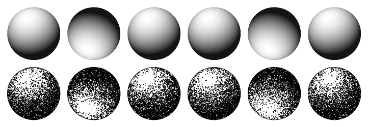
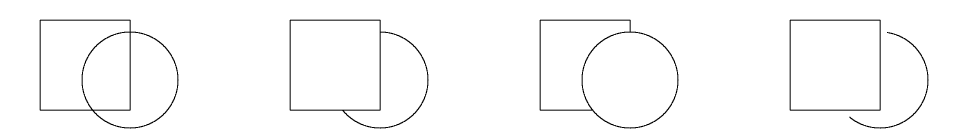
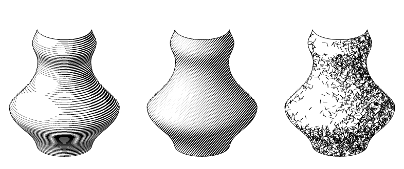
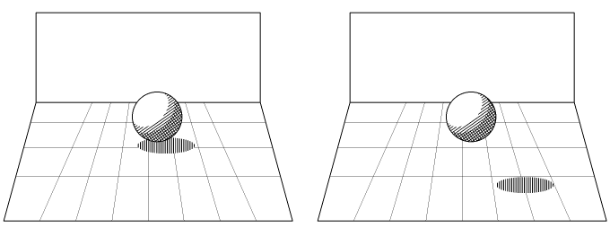
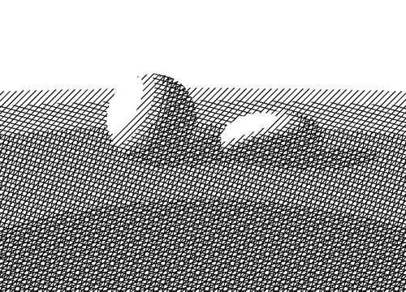
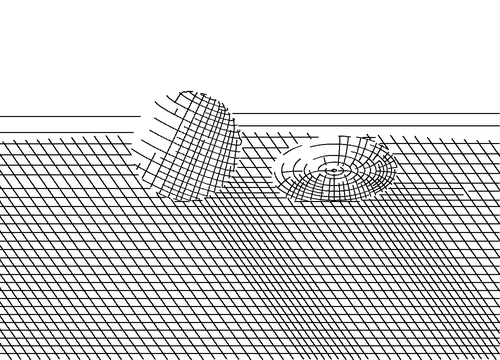
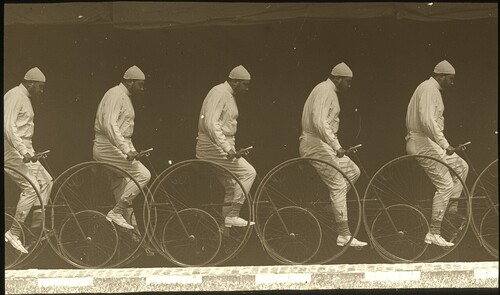

4. Perception: encoding volume and depth
The question of the whole course: a sheet is flat, the eye sees a scene. Which cues make that illusion, how do engravers put them in ink, how does an algorithm do it. First the perception side (what the eye uses), then the encoding side (which information goes into which property of the marks).
1. The illusion
A print is flat and binary: ink or no ink. Yet it is seen both as a surface (paper, marks) and as a scene (volumes, distance). Gombrich called it the double reading (Art and Illusion, 1960); Pirenne (Optics, Painting and Photography, 1970) looked at why a perspective picture still works when it is viewed from the wrong place: the awareness of the surface compensates.
What a still drawing loses: binocular disparity, motion parallax, accommodation and vergence. Three of the strongest cues at short range. Worse, the flatness cues compete: frame, paper grain, visible marks, no blur. The drawing never fully wins, and doesn't have to.
What is left are the pictorial cues: the ones that survive in a single static image. Exactly the engraver's toolbox. Two questions, two scales:
- Volume: the shape of one object (is it a bump, a dent, round, folded).
- Depth: the layout of the scene (what is in front, how far).
2. Volume
For each cue: what the eye does, what the artist does, what the algorithm does.
Shading
Eye. Shape from shading is ill-posed: a grey ramp fits a bump and a dent. The visual system settles it with a prior: light comes from above (Ramachandran 1988). Flip the image and bumps become dents. A second ambiguity, the bas-relief: the same image fits a family of flattened or stretched surfaces (Belhumeur, Kriegman & Yuille 1999). Shading gives shape up to a depth scale.

Artist. One consistent light, usually from above. Lit side white, ombre propre with hatching that turns with the form, ombre portée as a separate flat regime. Algorithm. Tone = n·l, then threshold, dither or hatch density. Choose the light direction for the prior, not for physics. → tone, hatching A, inversion.
Occluding contour and junctions
Eye. The silhouette alone says a lot. Koenderink (1984): the sign of the curvature of the contour in the image gives the sign of the Gaussian curvature of the surface behind it. Convex contour, convex (dome-like) surface. Concave contour point, saddle. Inflection, the surface is flat in one direction (parabolic line). And the junctions where lines meet tell which edge passes behind which: a T-junction means the stem is hidden by the bar. Line labelling (Huffman 1971, Clowes 1971, Waltz 1975) turned this into a constraint problem: each edge is convex, concave or occluding.

Artist. Outline broken where the form turns away or is covered; a gap left in the line near an overlap; line weight heavier on the bearing side. Algorithm. Hidden-line removal by object id (clip the stroke where something is in front, then shorten it by a small margin), contours only where the depth jumps. Suggestive contours add the curvature information the silhouette misses. → lines B, lines C.
Line direction and texture
Eye. Strokes are read as lying on the surface. Which way they run changes the perceived shape. Interrante (1997) proposed strokes along the principal curvature directions; Girshick, Interrante, Haker & Lemoine (2000, « Line direction matters ») found them to convey shape better than other orientations; Kim, Hagh-Shenas & Interrante (2004) tested texture orientation on shape categorization. Effect not huge, but consistent.

Artist. Cross-contours: hatching that wraps the form like a bracelet, the first thing taught in figure drawing; in engraving, the lines follow the form (Mellan, Dürer). Algorithm. Direction field from the principal directions (or from the normals), streamlines or LIC along it. Conflict with the object's own texture direction: see the note below. → hatching B.
How well do line drawings depict shape?
Measured with the gauge figure (Koenderink, van Doorn & Kappers 1992): the observer rotates a small oriented disc until it looks tangent to the surface. This gives a perceived normal field, which varies from one observer to another (a depth scale again). Cole et al. (2009) used it on 3D models: line drawings made by artists compared with computer line drawings (contours, suggestive contours, ridges and valleys, apparent ridges). Results: people read shape from lines well, artists' drawings are usually as good as shading, and each algorithm misses some of the lines the artists drew. No ground truth for the drawing, only for the reading. → lines B.
3. Depth
Depth cues after Cutting & Vishton (1995), who classify them by the range where each is effective: personal (under about 2 m), action (about 2–30 m), vista (beyond). Ranges are rough. The cues struck through are not available on a flat sheet. The last three lines are additions here (not in their list, but part of the engraver's vocabulary).
| Cue | Range | In ink (artist) | Algorithm | Course |
|---|---|---|---|---|
| occlusion | all | overlap, T-junctions, gap in the hidden line | visibility, hidden-line removal, clip by object id | fig, B |
| relative size | all | same object smaller, smaller strokes | perspective projection, w0/zα | D |
| height in the visual field | action, vista | far = higher on the sheet, up to the horizon | projection of a ground plane | E (tree landscape) |
| relative density (texture gradient, Gibson 1950) | all | strokes and spacing finer and tighter with distance | texture in perspective; density must be controlled, not left to scale | E, marks |
| aerial perspective | vista | contrast falls, lines thinner, directions simplified, contours dropped (7 rules, incl. repoussoir) | remap tone, width, direction and contour by depth | D |
| linear perspective (added) | all | converging lines, floor ruled to a vanishing point | projection | fig |
| cast shadows (added) | personal, action | hatched ombre portée, contact shadow | shadow ray, separate hatch regime | fig |
| level of detail (added) | all | indication: full texture near, suggested, absent | LOD by depth, stroke culling, simplification | E |
| personal, action | lost | (stereo pair, outside the course) | ||
| personal, action | lost | (animation, outside the course) | ||
| personal | lost | — |
Cast shadows anchor the object
The shadow position says where the object touches the ground, or how high it is above. Kersten, Mamassian & Knill (1997): the ball moves along the same path in the image, but when its shadow moves differently the ball is seen to rise or recede in depth instead. Size and image position do not change, only the link to the ground. In drawing: no shadow, the object floats; a contact shadow, the object sits.

Texture gradient and relative density
Uniform texture on a plane, seen in perspective, compresses with distance: that alone gives slant and distance (Gibson). In ink the trap is the opposite one: more lines per area far away makes the horizon darker, against atmospheric perspective. See lines E.
Atmospheric perspective in lines
No colour, no real grey: the haze has to become density and character of the line. Seven engraving rules (decreasing contrast, finer lines, simplified direction, vanishing contours, less detail, repoussoir, broken strokes far away), each with a renderer rule: lines D.
Level of detail is a depth cue
Near: every leaf, every blade. Far: a tonal patch, a few strokes that suggest. An engraver stops drawing as the eye would stop resolving. The algorithm has to decide what to keep (select, merge, simplify), not only shrink. Tree landscape: lines E.
Repoussoir
A dark foreground element (tree, rock, figure) at the edge of the picture, strong contrast and detail: it pushes the rest back. It sets the scale of the depth range. The cheapest depth cue: one black mass in front, everything else drops by comparison. → lines D.
4. Encoding: information → marks
Now the other side. Ink has to carry an information field from the scene. Each method is a choice: which field goes into which property of the marks. Physics vocabulary for the marks (density, anisotropy, homogeneity, order, defects), Marr's levels for the information (signal, 2½D sketch, object), plus one more level on top: the symbol.
The information
From physics to symbol. Roughly Marr's ladder (Vision, 1982): primal sketch → 2½D sketch → 3D object model, then meaning. Volume cues live in the geometry rows (order 1, 2, contours), depth cues in the order 0 row and in light.
| Level | Information | Field type | Source in a renderer |
|---|---|---|---|
| light | value (luminance) | scalar | shaded image |
| light | shadow type: lit side, form shadow (ombre propre), cast shadow (ombre portée), reflected light, highlight | categorical label | n·l sign, shadow ray, specular term |
| geometry, order 0 | depth | scalar, used through its gradient | z-buffer |
| geometry, order 1 | surface orientation | vector → drawn as a line field (θ ≡ θ+180°) | normal buffer |
| geometry, order 2 | curvature, principal directions | symmetric 2-tensor: two directions | mesh, shape operator |
| geometry, singular | contours: silhouette (depth jump), crease (normal jump), boundary | discontinuities, sets of measure zero | edges in G-buffers |
| matter | material: matte/glossy, roughness, grain | statistics of a small-scale texture | BRDF, roughness map |
| object | identity, figure/ground, object texture (wood, fur, foliage) | segmentation, labels | object id buffer |
| dynamics | movement: velocity, trajectory, phase of a gesture | vector field over time, not in one frame | motion vectors, previous frames, animation curves |
| dynamics | forces: weight distribution, support, tension, balance | stress tensor; invisible, only inferred | physics sim, center of mass, contact points |
| meaning | convention: map hachures (slope), section hatching (cut), motion lines | code shared with the reader | — (a rule, not a buffer) |
| meaning | symbol: the drawn tree, the cloud as a curl, importance | category | — (semantics, attention) |
The dynamics level is different in kind: neither movement nor force is in one frame. A photograph gives motion blur at most, and no forces. A drawing can show both: the trace of time (several positions, speed lines) and the causes (which leg carries the weight). Information beyond the visible, half-way to convention. Higher up, the mark resembles what it stands for less and less: density → value is analog, glyph → « tree » is a code. Hatching sits in between.
The marks, as a material
Describe the ink by its statistics:
- Density — ink per area. Value.
- Anisotropy — dots carry no direction. Lines carry one, like a nematic liquid crystal: a direction without sign. Cross-hatching carries two: the carrier of a tensor (curvature).
- Homogeneity — uniform statistics read as « flat, facing me ». A gradient of spacing or scale reads as depth: texture gradient.
- Scale — spacing, stroke length. Finer far away, and indication.
- Order — crystal (line screen, Bayer), liquid (blue noise, short dashes), gas (white noise). Material, hand vs machine.
- Correlation length — long streamlines say « clean continuous surface »; short dashes promise nothing.
- Amplitude — width, contrast. Value; atmospheric depth.
- Polarity — black on white or the reverse (inversion).
- Trace in time — repeated shape along a path, streaks along the velocity. Movement.
- Tension of the line — taut or sagging, heavier on the bearing side. Forces.
- Defects — a contour is a domain wall of the field; poles of a hatched sphere are real singularities. Engravers place or hide them.


Same density, three orders. Same value, different material.


Mapping: information → carrier
Default choices. Artists swap them all the time.
| Information | Usual carrier | Alternatives |
|---|---|---|
| value | density | width, polarity, number of layers |
| shadow type | change of regime (cast shadow: flat contre-taille; form shadow: follows the form) | polarity, a contour on the shadow line |
| orientation | anisotropy (stroke direction) | stroke curvature, dot elongation |
| curvature | second direction (cross-hatching), curvature of the strokes | suggestive contours |
| depth | scale, contrast, homogeneity gradient | line weight, contour drop-out, repoussoir |
| contour | 1D line | domain wall without line (texture change) |
| material | order, correlation length | stroke character (wobble, length) |
| object texture | its own direction field (grain, fur) | glyphs repeated |
| movement | speed lines (streaks along the velocity) | repeated positions (Marey), smeared or doubled contours, line of action |
| forces | line weight on the bearing side, contact shadow | line of action, axes of contrapposto, tension of the contour, compression folds, hatching along stress trajectories |
| symbol | glyph | convention (hachure, section) |


Forces have a physics form that fits: weight distribution in a solid is a stress tensor, with principal directions like curvature. Culmann and Meyer drew the stress trajectories in the femur head and the trabeculae lie along them (Wolff's law): the bone is a hatching of its forces. Same idea, cruder, in figure drawing: contrapposto, plumb line, line of action. Also photoelasticity.
Conflict. One stroke direction cannot carry both the surface orientation and the object's own texture direction (wood grain on a cylinder). Engravers decide per object. An algorithm has to choose, or give each its own family of lines.
Methods × information
Each method lets some fields through and drops the others. ● carried, ○ partly or if designed for it. The depth column is shaded: it is the course's question.
| Method | value | shadow | orient. | curv. | depth | contour | material | motion | force | symbol |
|---|---|---|---|---|---|---|---|---|---|---|
| threshold | ○ | ○ | ○ | |||||||
| dithering, halftone | ● | ○ | ||||||||
| stippling | ● | ○ | ||||||||
| line screen | ● | |||||||||
| threshold layers | ● | |||||||||
| width-modulated engraving | ● | ● | ○ | ○ | ||||||
| stroke textures (Winkenbach & Salesin) | ● | ○ | ○ | ○ | ○ | ● | ||||
| orientable dashes (Salisbury) | ● | ● | ○ | |||||||
| streamlines (Jobard & Lefer + flow field) | ● | ● | ○ | |||||||
| curvature hatching (Hertzmann & Zorin) | ● | ● | ● | ○ | ||||||
| Tonal Art Maps | ● | ○ | ○ | ● | ||||||
| LIC | ● | ● | ● | |||||||
| black/white inversion | ● | ○ | ○ | |||||||
| image edges (Sobel, XDoG) | ○ | ○ | ● | |||||||
| G-buffer contours | ○ | ● | ||||||||
| suggestive contours | ● | ● | ||||||||
| sketchy lines | ○ | ○ | ||||||||
| depth rules (atmospheric) | ○ | ● | ○ | |||||||
| cross-contours, principal-direction hatching (Girshick et al. 2000) | ● | ● | ● | ○ | ||||||
| cast and contact shadows (figure) | ○ | ● | ● | ○ | ||||||
| level of detail (indication) | ● | ○ | ||||||||
| speed lines (Masuch et al. 1999; Collomosse et al. 2005) | ○ | ● | ○ | |||||||
| line of action (Guay, Cani & Ronfard 2013) | ○ | ○ | ● | ○ | ||||||
| neural line drawing (Informative Drawings, CLIPasso) | ● | ○ |
Reading the table: the tone chapter fills the first column; the hatching chapter adds orientation, curvature and material; the lines chapter fills contour and depth. Depth is carried by few methods and mostly as a side effect of line weight or of a rule applied by hand. Shadow type, motion, force and symbol are almost empty: handled by hand in engraving, by conventions in technical drawing and cartography.
5. Open questions
- Depth as a first-class channel: one parameter z driving contrast, width, direction, contour and detail together, so that the seven rules are one slider, not seven.
- Light chosen for the prior, not for physics: pick the light direction (and the sign of the bas-relief) that makes the shape read right. Perceptual optimisation of the light, in ink.
- Cast shadows as their own regime: hatch ombre portée and ombre propre differently, with the contact shadow doing the anchoring.
- Defects of the line field: where to put the singularities (poles, saddles) so they read as intended.
- Measure instead of believe: gauge-figure on an ink render, per method of the matrix. Which hatching conveys shape best, same ink.
- Order as a parameter: one slider from crystal to gas, mapped to the material.
- Forces as hatching: strokes along the principal stress directions, the way trabeculae follow the load. Weight made visible.
- Toward the symbol: when does a texture of marks become a glyph? Foliage drawn as repeated « leaf » marks is half-way.
← 3. lines · references →